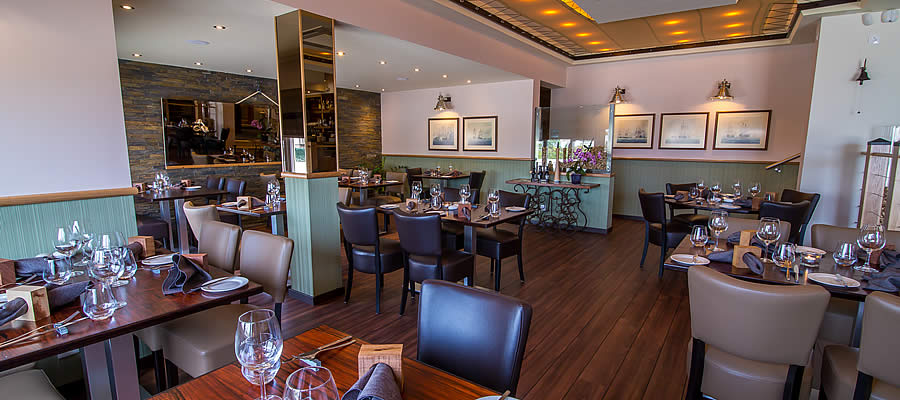
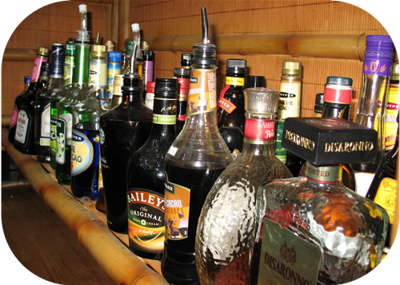

Nuestro equipo de profesionales expertos está encantado de darle la bienvenida y de sugerirle que empiece su cena con un aperitivo en nuestro bar, mientras tanto, puede elegir su menú en nuestra variada carta, o decidirse por alguna de las especialidades del día.

Tenemos una bodega completa y abundante con una selección de buenos vinos portugueses. Además, el Sr. Joaquim estará encantado de ayudarle a elegir el vino más apropiado para acompañar su menú.
Junto a la sala principal del restaurante encontrará una agradable terraza ajardinada para disfrutar de su comida al aire libre, un pabellón de invierno con aire acondicionado y un patio de recreo para los niños.